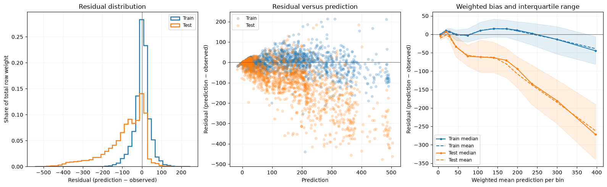

Residuals and large loss contributions¶
Use Residuals to inspect the shape of regression errors, systematic bias at
different prediction levels, and observations contributing most to the chosen
loss. The report uses predictions already calculated by the training workflow.
Add the report to training¶
This complete workflow uses recorded UCI Bike Sharing hourly counts and dates.
Cache the source with python -m examples.prepare_data --dataset bike before
running recipes; examples never download it implicitly.
from examples.custom_metric import weighted_mae
from examples.training_setup import prepare_training
from ml_toolkit import train_model
from ml_toolkit.evaluation import Residuals
from ml_toolkit.models import CatBoostRegressionModel
from ml_toolkit.training import Holdout
data, params, config = prepare_training()
trained = train_model(
splitter=Holdout(data, test_size="2012-01-01"),
params=params,
model_factory=CatBoostRegressionModel,
metric=weighted_mae,
run_name="bike-residuals",
config=config,
prediction_evaluators=Residuals(loss="squared", n_bins=12, max_rows=15),
)
assert trained.test_metrics is not None
The evaluator follows the shared ReportingConfig stage switches and figure
settings. Each enabled fit writes rows.parquet, bins.parquet, worst.parquet,
and residuals.png beneath residuals/. The parquet rows include observed
outcomes and optional object IDs.
Read the residual diagnostics¶
For a reproducible direct example, fit 80 iterations on the recorded 2011 hours and evaluate those predictions on both 2011 and untouched 2012 observations. Every hour has weight one; outcomes and predictions are rentals per hour.
from pathlib import Path
from examples.evaluation_data import fit_bike_evaluation
from ml_toolkit.plots.residuals import residual_diagnostics
example = fit_bike_evaluation()
output = Path("plots")
output.mkdir(exist_ok=True)
report = Residuals(loss="squared", n_bins=12, max_samples=1500, max_rows=15)
diagnostics = report.calculate(
data=example.data,
prediction=example.prediction,
split=example.split,
)
residual_diagnostics(
diagnostics,
save_fig=output / "residuals-diagnostics.png",
loss=report.loss,
max_samples=report.max_samples,
)
assert diagnostics.rows.height == len(example.data)
assert diagnostics.worst.height == 30
assert diagnostics.worst["weight"].min() > 0

Positive residuals mean overprediction; negative residuals mean underprediction.
The first panel shows the share of each split's total row weight in common
residual bins. The scatter panel reveals whether errors change with prediction
size. Its uniformly sampled points are bounded by max_samples per split;
marker sizes represent relative row weights. Sampling affects only that panel.
The last panel shows the weighted median, interquartile band, and weighted mean residual in prediction bins. Cutoffs are fitted from positive-weight train predictions when present and shared across splits. Held-out-only calls use the supplied positive-weight predictions. Repeated quantile cutoffs collapse, so a constant prediction produces one bin. Extreme predictions fall into the first or last bin. Train and test curves are compared at each split's weighted mean prediction within the shared bin; their horizontal coordinates can differ.
Inspect the tables¶
calculate returns a ResidualResult containing three Polars tables:
| Table | Contents |
|---|---|
rows |
Every original row, with position, split, timestamp, target, prediction, weight, residual, unit loss, weighted contribution, and prediction-bin ID. Includes object_id when the pool supplies it. |
bins |
Populated split/bin pairs with bounds, positive-weight row count, total weight, weighted mean prediction/residual/loss, total contribution, and residual quantiles. |
worst |
Up to max_rows positive-weight rows per split, ordered by decreasing weighted contribution, with original row order breaking ties. |
largest = diagnostics.worst.select(
"split", "time", "observed", "prediction", "weight", "contribution"
)
largest.write_parquet(output / "residuals-largest.parquet")
assert diagnostics.bins["sum_weight"].sum() == example.data.weight.sum()
Quantiles use the inverse weighted empirical CDF: the smallest residual whose
cumulative weight reaches the requested share. p05, p25, p50, p75, and
p95 correspond to 5%, 25%, 50%, 75%, and 95%. Zero-weight observations remain
in rows for positional alignment but do not enter statistics, figures, or
the largest-contribution table. Missing object IDs are not fabricated.
Choose the loss and residual scale¶
loss |
Residual | Individual weighted contribution |
|---|---|---|
"squared" |
Prediction minus observed target | Weight × squared error |
"absolute" |
Prediction minus observed target | Weight × absolute error |
"poisson" |
Signed square root of Poisson unit deviance | Weight × Poisson unit deviance |
"gamma" |
Signed square root of Gamma unit deviance | Weight × Gamma unit deviance |
Poisson requires nonnegative observations and strictly positive predicted means. At observed zero its unit deviance is twice the predicted mean. Gamma requires strictly positive observations and predicted means. Both deviance residuals retain the prediction-minus-observation sign and equal zero at a perfect fit. These domains apply to every supplied row, including rows with zero weight. Squared and absolute error support signed outcomes and predictions.
Choose a loss explicitly for the regression task. The evaluator does not infer it from the model's training parameters or from the metric callback. A Poisson loss report therefore needs predictions on the positive mean scale, rather than raw log predictions. The report supports train-only or held-out-only data, preserves inputs, and adds no scalar optimization objectives.
API reference¶
Residuals
dataclass
¶
Residuals(
*,
name: str = "residuals",
loss: ResidualLoss = "squared",
n_bins: int = 10,
histogram_bins: int = 40,
max_samples: int = 10000,
max_rows: int = 20,
seed: int = 0
)
Bases: PredictionEvaluator
Inspect weighted errors, prediction-dependent bias, and large losses.
Parameters:
| Name | Type | Description | Default |
|---|---|---|---|
name
|
str
|
Unique report name and artifact namespace. |
'residuals'
|
loss
|
(squared, absolute, poisson, gamma)
|
Loss used to rank individual weighted contributions. Squared/absolute use prediction minus target as residual. Poisson/Gamma use the signed square root of their unit deviance with the same sign convention. Poisson requires nonnegative targets and positive predictions; Gamma requires both targets and predictions to be strictly positive. |
'squared'
|
n_bins
|
int
|
Maximum number of weighted prediction-quantile bins. Repeated cutoffs collapse. Positive-weight train rows define cutoffs when available; held-out-only calls use their supplied positive-weight rows. |
10
|
histogram_bins
|
int
|
Number of common residual histogram bins across supplied splits. |
40
|
max_samples
|
int
|
Maximum uniformly sampled positive-weight scatter points per split. Does not change tables, histogram weights, or quantile calculations. |
10000
|
max_rows
|
int
|
Maximum largest-contribution observations exported for each split. |
20
|
seed
|
int
|
Nonnegative seed used only for scatter sampling. |
0
|
Notes
Includes every supplied split and supports train-only reports. Zero-weight
rows remain in rows.parquet but do not enter summaries, figures, or worst
rows. Exports rows.parquet, bins.parquet, worst.parquet and residuals.
calculate ¶
calculate(
*, data: Pool, prediction: FloatArray, split: Series
) -> ResidualResult
Calculate aligned residuals and complete weighted summaries.
Parameters:
| Name | Type | Description | Default |
|---|---|---|---|
data
|
Pool
|
Aligned observations with finite targets and finite nonnegative weights with positive total. All rows must satisfy the loss domain. |
required |
prediction
|
FloatArray
|
One finite prediction per row in the original target units. |
required |
split
|
Series
|
Non-null String labels containing train and at most one of val/test; held-out-only data is also supported. |
required |
Returns:
| Type | Description |
|---|---|
ResidualResult
|
Original-order row details, weighted prediction-bin statistics, and largest weighted loss contributions per split. |
write_artifacts ¶
write_artifacts(
*,
data: Pool,
prediction: FloatArray,
split: Series,
artifact_dir: Path,
figure: FigureConfig,
features: tuple[FeatureLevelConfig, ...] | None,
n_bins: int
) -> list[Path]
ResidualResult
dataclass
¶
ResidualResult(
rows: DataFrame, bins: DataFrame, worst: DataFrame
)
Keep aligned observations, weighted bin summaries, and worst rows.
Attributes:
| Name | Type | Description |
|---|---|---|
rows |
DataFrame
|
Every input row in its original order, including zero-weight rows. Contains row_index, split, time, observed, prediction, weight, residual, loss, contribution, and prediction_bin, plus object_id when supplied. contribution is row weight multiplied by the nonnegative unit loss. |
bins |
DataFrame
|
Positive-weight summaries for each populated split/prediction-bin pair. Bin bounds use positive-weight train predictions when available; otherwise all supplied positive-weight predictions define the bins. Summaries contain counts, total weight, weighted means, and the inverse weighted empirical CDF residual quantiles p05, p25, p50, p75, and p95. |
worst |
DataFrame
|
Up to max_rows positive-weight observations per supplied split, ordered by decreasing contribution and then original row_index. It has the same schema as rows. This table includes targets and optional IDs. |
residual_diagnostics ¶
residual_diagnostics(
result: ResidualResult,
*,
save_fig: str | Path,
loss: ResidualLoss = "squared",
histogram_bins: int = 40,
max_samples: int = 10000,
seed: int = 0,
figure: FigureConfig | None = None
) -> None
Plot weighted residual distribution, sampled points, and bin quantiles.
Parameters:
| Name | Type | Description | Default |
|---|---|---|---|
result
|
ResidualResult
|
Complete tables returned by Residuals.calculate. Only positive-weight rows enter plots. Every supplied split appears in each panel. |
required |
save_fig
|
str or Path
|
Destination figure path. Parents are created and the figure is closed. |
required |
loss
|
(squared, absolute, poisson, gamma)
|
Residual label matching the calculation. Poisson/Gamma display signed square-root unit deviance; other losses use prediction minus target. |
'squared'
|
histogram_bins
|
int
|
Number of shared bins. Histogram heights sum to one within each split, using row weights; all positive-weight rows contribute. |
40
|
max_samples
|
int
|
Maximum scatter points per split, uniformly sampled without replacement. Marker size represents relative row weight. Summaries use every row. |
10000
|
seed
|
int
|
Nonnegative random seed for display sampling only. |
0
|
figure
|
FigureConfig or None
|
Shared figure size, resolution, and output format. |
None
|
Notes
The final panel shows the weighted median, interquartile band and weighted mean residual at each populated prediction bin's weighted mean prediction. Positive residuals indicate overprediction for every supported loss.